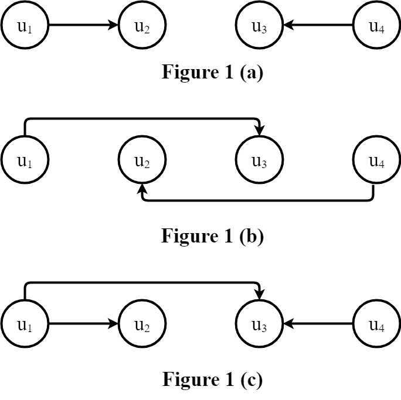

coderodde's technical weblog
For best rendering of formal text,
it is advised to view this page via desktop browsers.
Solving most cost-effective loan problem
1 Introduction
In the most cost-effective loan problem, we are given a directed
graph of actors where each actor may lend some amount of resources
it possesses to its child nodes. In case an actor needs more than
his immediate parents can lend, the parents might need to lend from
their parents, adjust the interest rate to cover their own expenses,
and pass the funds to the original lending actor.
Formally, we are given a directed graph $G = (V, A)$, where $V$
is the set of actors, and $A \subseteq V^2$ is the set of directed
arcs. By $V(G)$ we denote the actor set of $G$, and likewise, by
$A(G)$ we denote the arc set of $G$. Given an arc $(u, v) \in A$,
we call $u$ a parent of $v$, $v$ a child of $u$.
Existence of such an arc indicates that $u$ may lend some or all
of its resources to $v$. Along the graph, we are given a
potential function $\mathfrak{P} \colon V \to [0, \infty) = \mathbb{R}_{\geq 0}$
that maps each actor in the graph to the (non-negative) equity that that very
node has at its disposal. Finally, we are given an interest rate function
$\mathfrak{I} \colon A \to \mathbb{R}_{\geq 0}$ that maps each arc
$(u, v) \in A$ to the interest rate the actor $u$ can offer $v$
when $v$ decides to lend from $u$. From now on, we will call the
aforementioned amount of resources or equity simply potential.
Apart from the target data structure, in a problem instance, we
are given an actor $a \in V$ that applies for a loan, a required
potential $P \in \mathbb{R}_{\geq 0}$ and a maximum tolerable
interest rate $i \in \mathbb{R}_{\geq 0}$. Our aim, then, is to
compute a loan (which may involve more than one lending actor)
with minimized interest rates.
2 Interest rate model
Throughout the post, we assume a simple interest rate model. The
accumulated balance at time $t$ since the time point at which the
loan was issued, with initial principal $\mathfrak{A}$ and interest
rate $r$ is given by
\[
\mathfrak{A}(1 + r)^t.
\]
If we have in the graph, for instance, a directed acyclic path
$\langle u, v, z \rangle$ with $r_{u,v}$ being the interest rate
of $(u, v)$, and $r_{v, z}$ being the interest rate of $(v, z)$,
the interest rate equation becomes
\[
\mathfrak{A}(1 + r_{u,v})^t (1 + r_{v,z})^t = \mathfrak{A}\big[ (1 + r_{u,v})(1 + r_{v,z}) \big]^t = \mathfrak{A}(1 + R)^t.
\]
Above, $R$ is the combined interest rate. Dividing both
sides by $\mathfrak{A}$ and taking $t$-th root, we obtain
\begin{aligned}
(1 + r_{u,v})(1 + r_{v,z}) &= 1 + R \\
R + 1 &= 1 + r_{u,v} + r_{v,z} + r_{u,v}r_{v,z} \\
R &= r_{u,v} + r_{v,z} + r_{u,v}r_{v,z}.
\end{aligned}
In general, we write $r_1 + r_2 + r_1 r_2 = \mathfrak{C}(r_1, r_2).$
Since we may deal with entire "loan chains," we need
to define the concept of effective interest rate.
Effective interest rate is given by
\[
I(u, v) =
\begin{cases}
\mathfrak{I}(u, v) &\mbox{if } (u, v) \in A \\
\underset{z \in {\rm C{\small HILDREN}}(G, u)}{\min} \, \mathfrak{C}\big(\mathfrak{I}(u, z), I(z, v)\big) &\mbox{otherwise,}
\end{cases}
\]
where ${\rm C{\small HILDREN}}(G, z)$ is the set of child nodes
of $z$, or, formally, $\{ u \colon (z, u) \in A(G) \}.$
3 Problem statement
Given a problem instance $(G, a, \mathfrak{P}, \mathfrak{I}, P, i)$,
we wish to compute two additional functions: $\pi$ and $d$.
$\pi \colon V \to \mathbb{R}_{\geq 0}$ is called a
solution potential function and it maps each actor
$u$ to potential $\pi(u)$ $u$ can lend, and $d \colon V \to V$
is called a direction function and it maps each actor
$u$ to some of its children $d(u)$ to which $\pi(u)$ worth
potential is being lent. What comes to constraints, no actor
$u$ lending some of its potential shall have $I(u, a) > i$,
since $a$ cannot afford effective interest rates above $i$.
Also, if it is not possible, due to the first constraint, to
obtain a loan worth $P$, the loan should be maximized from below
as close to $P$ as possible.
In order to implement the first constraint, we need to define the
set of admissible solution potential functions:
\[
\pi_{I, a, i, G} = \{ \pi \colon V(G) \to \mathbb{R}_{\geq 0} \; | \; \pi(u) = 0 \text{ if } I(u, a) > i \}.
\]
An admissible solution potential function $\pi$ is said to be valid
if it also satisfies
\[
\sum_{u \in V} \pi(u) \in [0, P],
\]
and we denote that by $\pi \in \mathfrak{V}$.
Now, we can state the objective formally:
\[
\pi = \underset{\pi' \in \mathfrak{V}}{\arg \min}{\Bigg[ P - \sum_{u \in V} \pi'(u) \Bigg]},
\]
and
\[
d(u) = \underset{z \in {\rm C {\small HILDREN}}(G, u)}{\arg \min} \Bigg[\mathfrak{C}\big(\mathfrak{I}(u, z), I(z, a)\big)\Bigg].
\]
4 Solution algorithm
Since the effective interest rate does not decrease with adding
more directed arcs, we must have that for any actor $a \in V$ the
most cost-efficient lender is an immediate parent. Whether the second most cost-efficient lender
is an immediate parent or not depends on effective interest rates.
Regardless, since we consider effective interest rates, basically we
are growing a directed "minimum spanning tree" which we
extend in a greedy fashion one arc at a time:
In the very beginning, the tree is trivial and consists only of $a$.
Then a most cost-effective parent $u_1$ is selected and the arc $(u_1, a)$
is introduced to the tree. Then $u_2$ is selected. It must not
belong to $\{a, u_1\}$ while have the lowest possible effective rate
among all nodes in $V \setminus \{ a, u_1 \}$. This procedure continues
until a desired potential $P$ is collected or until there is no more nodes
left with affordable effective interest rates. Below
Priority-Queue-Insert$(Q, \langle a, b, c \rangle)$
stores the triple $\langle a, b, c \rangle$ in the priority queue $Q$ and uses $c$ as a priority key.
$\text{let } Q \text{ be an empty priority queue}$
$\text{let } \pi \text{ be an empty solution potential function}$
$\text{let } d \text{ be an empty direction function}$
$C \leftarrow \emptyset$
$P_{\text{collected}} \leftarrow 0$
$\pi(u) \leftarrow 0$
$d(u) \leftarrow \Nil$
Priority-Queue-Insert$(Q, \langle u, a, \mathfrak{I}(u, a) \rangle)$
$\langle u, v, i_{\text{current}} \rangle \leftarrow $ Priority-Queue-Extract-Minimum$(Q)$
$p_\Delta \leftarrow \min (P - P_{\text{collected}}, \mathfrak{P}(u))$
$P_{\text{collected}} \leftarrow P_{\text{collected}} + P_\Delta$
$\pi(u) \leftarrow P_\Delta$
$d(u) \leftarrow v$
$C \leftarrow C \cup \{ u \}$
$i_{\text{next}} \leftarrow \mathfrak{C} \big( i_{\text{current}}, \mathfrak{I}(z, u) \big)$
Priority-Queue-Insert$(Q, \langle z, u, i_{\text{next}}\rangle)$
$(\pi, d)$
5 Proof of correctness
Lemma 1 (Termination)
The algorithm terminates.
Note that each node removed from the priority queue at line 13 is
inserted into the closed set $C$ at line 18. Now, the line 23 will not
reintroduce the same node to $Q$ and so, $Q$ eventually becomes empty (unless
the algorithm terminates earlier in case the required potential is collected).
Lemma 2 (Optimality)
The algorithm finds most cost-effective loans.
The effective interest rate function $I$ implicitly defines a transitive closure
from any actor $u \neq a$ to $a$ assuming the effective interest rate of $u$ is
within the constraint $I(u, a) \leq i$. That way, $a$ loans from all affordable
parents (immediate or intermediate) in a greedy fashion: lend as much as possible
from the most affordable actor, then lend as much as possible from the second most
affordable actor, and so on until the requested potential is collected or there are
no more affordable lenders left. It is easy to see that such strategy minimizes
interest expenses.
Lemma 3 ($d$ is acyclic)
Given a solution direction function $d$,
there exist no actor sequence $\langle u_1, u_2, \dots, u_k \rangle$
such that $d(u_1) = u_2$, $d(u_2) = u_3$, $\dots$, $d(u_{k - 1}) = u_k$ and $d(u_k) = u_1$.
The only way for such a cycle to emerge is to have $\mathfrak{I}(u_1, u_2) =
\mathfrak{I}(u_2, u_3) = \dots = \mathfrak{I}(u_{k-1}, u_k) = \mathfrak{I}(u_k, u_1) = 0$.
Without loss of generality, suppose the search enters the cycle via $u_1$. When $u_k$ will be
removed from the priority queue, the arc $(u_k, u_1)$ will be ignored by the line 20 since $u_1$ is in $C$, and
so, there is no way $d(u_k)$ could be mapped to $u_1$.
Lemma 4
The sum of all solution potentials cannot exceed $P$.
This is trivially guaranteed by the line 14 and the second test at line 12.
6 Running time analysis
All the operations except Priority-Queue-Insert
and Priority-Queue-Extract-Minimum run in $\mathcal{O}(1)$ time.
In particular, operations on $\pi, d$ and $C$ may be expected to run in $\mathcal{O}(1)$
on average by resorting to hash-table based maps and sets. With geometric expansion
scheme [1], adding an element to a hash-table based data
structure runs in amortized $\mathcal{O}(1)$. (If the load factor reaches its
upper bound, the underlying storage array must be made larger.)
What comes to the priority queue $Q$, it clearly stores graph actors without copies
of a same actor. Now, if we choose a binary heap, both run in $\mathcal{O}(\log V)$ time.
Priority-Queue-Insert is called no more than $|E|$
times, and Priority-Queue-Extract-Minimum is called once per
node, and so we have the running time $\mathcal{O}(E \log V + V \log V) = \mathcal{O}(E \log V)$. By deploying
a Fibonacci heap instead, we may reduce this to $\mathcal{O}(E + V \log V)$.
7 Future work
We used a very simple interest rate model in our solution, and
so it leaves the case where the used interest rate model is more
realistic. In general, with initial principal $\mathfrak{A}$,
interest rate $r > 0$, the number of compound periods $n$ per time unit, and time
since the moment the loan was issued $t$, the balance grows
according to
\[
\mathfrak{C} = \mathfrak{A}\Bigg( 1 + \frac{r}{n} \Bigg)^{\lfloor nt \rfloor}.
\]
Also, as $n \to \infty$, $\mathfrak{C} \to \mathfrak{A}e^{rt}$.
Combining loans with different parameters in a meaningful way
seems to be a non-trivial task but we might address it later.
8 References
[1] Keeping vectors efficient (Retrieved 2018-03-09.)
Proving inclusion-exclusion principle
It is easy to check pictorially using a Venn diagram that given two sets, $A_1$ and $A_2$, $|A_1 \cup A_2| = |A_1| + |A_2| - |A_1 \cap A_2|$.
The inclusion-exclusion principle generalizes the previous identity to a collection of sets $A_1, A_2, \dots, A_n$, and is given by
\begin{aligned}
\Bigg\lvert \bigcup_{i = 1}^n \Bigg\rvert = \sum_{i = 1}^n \lvert A_i \rvert &- \sum_{1 \leq i < j \leq n} \lvert A_i \cap A_j \rvert \\
&+ \sum_{1 \leq i < j < k \leq n} \lvert A_i \cap A_j \cap A_k \rvert \\
&\dots \\
&(-1)^{n + 1}\Bigg\lvert \bigcap_{i = 1}^n A_i \Bigg\rvert.\\
\end{aligned}
We will use induction to prove also any case $n > 2$. Let $B = \bigcup_{i = 1}^n A_i$, and $A_{n + 1}$ given. Using the same principle for the case of only two sets, we must have
\[
|B \cup A_{n + 1}| = |B| + |A_{n + 1}| - |B \cap A_{n + 1}|.
\]
Next, we need a simple lemma for extending distributive law to multiple sets:
Lemma 1 (Distributive law for multiple sets)
For any sets $A_1, \dots, A_n, B$, we must have
$$
\Bigg( \bigcup_{i = 1}^n A_i \Bigg) \cap B = \bigcup_{i = 1}^n (A_i \cap B).
$$
First, let us verify the base case $n = 2$:
\begin{aligned}
\Bigg( \bigcup_{i = 1}^2 A_i \Bigg) \cap B &= (A_1 \cup A_2) \cap B \\
&= (A_1 \cap B) \cup (A_2 \cap B) && \text{by distributive law}\\
&= \bigcup_{i = 1}^2 (A_i \cap B).
\end{aligned}
Suppose the identity holds for $A_1, \dots, A_n$. Now,
\begin{aligned}
\Bigg( \bigcup_{i = 1}^{n + 1} A_i \Bigg) \cap B &= \Bigg[ \Bigg( \bigcup_{i = 1}^n A_i \Bigg) \cup A_{n + 1} \Bigg] \cap B \\
&= \Bigg[ \Bigg( \bigcup_{i = 1}^n A_i \Bigg) \cap B \Bigg] \cup \Bigg[ A_{n + 1} \cap B \Bigg] && \text{by distributive law}\\
&= \Bigg[ \bigcup_{i = 1}^n (A_i \cap B) \Bigg] \cup \Bigg[ A_{n + 1} \cap B \Bigg] && \text{by induction hypothesis} \\
&= \bigcup_{i = 1}^{n + 1} (A_i \cap B)
\end{aligned}
as desired. Now
\begin{aligned}
\Bigg\lvert \bigcup_{i = 1}^{n + 1} A_i \Bigg\rvert &= \Bigg\lvert \Bigg( \bigcup_{i = 1}^n A_i \Bigg) \cup A_{n + 1} \Bigg\rvert \\
&= \Bigg\lvert \bigcup_{i = 1}^n A_i \Bigg\rvert + \Bigg\lvert A_{n + 1} \Bigg\rvert - \Bigg\lvert \Bigg( \bigcup_{i = 1}^n A_i \Bigg) \cap A_{n + 1}\Bigg\rvert\\
&= \Bigg\lvert \bigcup_{i = 1}^n A_i \Bigg\rvert + \Bigg\lvert A_{n + 1} \Bigg\rvert - \Bigg\lvert \bigcup_{i = 1}^n (A_i \cap A_{n + 1}) \Bigg\rvert \quad \text{by distributive law} \\
&= \sum_{i = 1}^n \lvert A_i \rvert - \sum_{1 \leq i < j \leq n} \lvert A_i \cap A_j \rvert + \sum_{1 \leq i < j < k \leq n} \lvert A_i \cap A_j \cap A_k \rvert + \dots + (-1)^{n + 1} \lvert A_1 \cap \dots \cap A_n\rvert \quad \text{by induction hypothesis} \\
&+ \lvert A_{n + 1} \rvert - \Bigg[ \sum_{i = 1}^n | A_i \cap A_{n + 1} | - \sum_{1 \leq i < j \leq n} \lvert (A_i \cap A_{n + 1}) \cap (A_j \cap A_{n + 1}) \rvert + \dots + (-1)^n \sum_{1 \leq x_1 < x_2 < \dots x_{n - 1} \leq n} \lvert (A_{x_1} \cap A_{n + 1}) \cap \dots \cap (A_{x_{n - 1}} \cap A_{n + 1}) \rvert + (-1)^{n + 1} \Bigg\lvert \bigcap_{i = 1}^n (A_i \cap A_{n + 1}) \Bigg\rvert\Bigg] \\
&= \sum_{i = 1}^n \lvert A_i \rvert - \sum_{1 \leq i < j \leq n} \lvert A_i \cap A_j \rvert + \sum_{1 \leq i < j < k \leq n} \lvert A_i \cap A_j \cap A_k \rvert + \dots + (-1)^{n + 1} \lvert A_1 \cap \dots \cap A_n\rvert \\
&+ \lvert A_{n + 1} \rvert - \Bigg[ \sum_{i = 1}^n \lvert A_i \cap A_{n + 1} \rvert - \sum_{1 \leq i < j \leq n} \lvert A_i \cap A_j \cap A_{n + 1} \rvert + \dots + (-1)^n \sum_{1 \leq x_1 < x_2 < \dots < x_{n - 1} \leq n} \lvert A_{x_1} \cap A_{x_2} \dots A_{x_{n - 1}} \cap A_{n + 1} \rvert + (-1)^{n + 1} \Bigg\lvert \bigcap_{i = 1}^{n + 1} A_i \Bigg\rvert \Bigg] \\
&= \sum_{i = 1}^{n + 1} \lvert A_i \rvert - \sum_{1 \leq i < j \leq n + 1} \lvert A_i \cap A_j \rvert + \sum_{1 \leq i < j < k \leq n + 1} \lvert A_i \cap A_j \cap A_k \rvert + \dots + (-1)^{n + 2} \Bigg\lvert \bigcap_{i = 1}^{n + 1} A_i \Bigg\rvert.
\end{aligned}
Bidirectional iterative deepening search
In this post, I will briefly discuss a rather simple graph search technique that turned out to be rather efficient and consumes a moderate amount of memory.
The algorithm in question combines bidirectional search with iterative deepening. Bidirectionality buys us time-wise efficiency, whereas iterative deepening approach helps us save some memory. In this instance, we work on directed, unweighted graphs. In traditional, unidirectional breadth-first search, the work done is
\[
W_1 = \sum_{i = 0}^N d^i,
\]
where $N$ is the number of arcs on the shortest path, and $d$ is the average out-degree. Of course, the above expression requires little variance in node out-degrees. If, however, we denote the average out-degree by $d_o$, and average in-degree by $d_i$, the work done by bidirectional breadth-first search is
\[
W_2 = \sum_{j = 0}^{N / 2} d_i^j + \sum_{j = 0}^{N / 2} d_o^j.
\]
Now, if we set $d_i = d_o = d$, the speedup is roughly
\begin{aligned}
\frac{W_1}{W_2} = \frac{\sum_{j = 0}^N d^j}{2 \sum_{j = 0}^{N / 2} d^j}
= \frac{\frac{1 - d^{N + 1}}{1 - d}}{2 \frac{1 - d^{N / 2 + 1}}{1 - d}}
= \frac{1 - d^{N + 1}}{2 (1 - d^{N / 2 + 1})}
=\frac{d^{N + 1} - 1}{2(d^{N / 2 + 1} - 1)}
\approx \frac{d^{N + 1}}{2d^{N / 2 + 1}}
= \frac{d^{N / 2}}{2}
= \frac{\sqrt{d}^N}{2}
= \Theta(d^N),
\end{aligned}
which implies exponential speedup in shortest path length.
The bidirectional iterative deepening search works as follows. If the source node is the target node, halt and return a list containing only the node in question.
Otherwise, scan the child nodes of the source node, and scan the parent nodes of the target node. If there is a node scanned twice, we have found a shortest path.
If that does not produce a shortest path, go two steps deeper in both search directions starting from source and target nodes. There is, however, a catch: this arrangement may return with no solution in case the shortest path consists of an odd number of arcs.
To remedy this, for each depth $\Delta$, the forward search goes one step deeper.

The figures 1 (A) and 1 (B) demonstrate how the two search spaces go "through" each other, and the figure 1 (C) shows how to address that issue.
Before we proceed to pseudocode, we have to review some notational conventions. A directed graph $G$ is a tuple $(V, A)$, where $V$ is a set of nodes, and $A \subseteq V^2$ is a set of directed arcs.
Given such a graph $G$, we denote its arc set by $A(G)$. In addition, $\{ n \colon (u, n) \in A(G) \}$ is simply a set of children of the node $u$. Analogously,
$\{ n \colon (n, u) \in A(G) \}$ is the set of parent nodes of $u$. As a reminder, given a directed arc $(u, v) \in A(G)$, we consider it as an arrow from $u$ to $v$, and we call $u$ a parent of $v$, and $v$ a child of $u$.
$\pi \leftarrow$ Find-Shortest-Path$(G, s, \mu)$
$\text{remove the last node from } \pi$
$\pi \circ B$
$F \leftarrow F \cup \{ u \}$
Depth-Limited-Search-Forward$(G, v, \Delta - 1, F)$
$\text{prepend } u \text{ to } B$
$n$
$\text{remove the first node in }B$
$\Nil$
$\mu \leftarrow $Depth-Limited-Search-Backward$(G, v, \Delta - 1, B, F)$
$\mu$
$\text{remove the first node in } B$
$\Nil$
$\langle s \rangle$
$\Delta \leftarrow 0$
$F, B \leftarrow \emptyset$
Depth-Limited-Search-Forward$(G, s, \Delta, F)$
$\mu \leftarrow $ Depth-Limited-Search-Backward$(G, t, d, B, F)$
Build-Path$(s, \mu, B, G)$
$B \leftarrow \emptyset$
$F \leftarrow \emptyset$
$\Delta \leftarrow \Delta + 1$
The results are rather impressive. What comes to solving 15-puzzles, while iterative deepening A* dominates BID by a factor of three or so, on general graphs, BID
is faster than iterative deepening depth-first search by an order of magnitude, and BID outperforms unidirectional breadth-first search by three orders
of magnitude. The following listing is a typical output of the benchmarking program:
*** 15-puzzle graph benchmark ***
Seed = 1544375493597
BreadthFirstSearch in 1050 milliseconds. Path length: 18
IterativeDeepeningDepthFirstSearch in 36302 milliseconds. Path length: 18
BidirectionalIterativeDeepeningDepthFirstSearch in 20 milliseconds. Path length: 18
IterativeDeepeningAStar in 116 milliseconds. Path length: 18
Algorithms agree: true
*** General graph benchmark ***
Seed = 1544375531134
BidirectionalIterativeDeepeningDepthFirstSearch in 0 milliseconds. Path length: 5
IterativeDeepeningDepthFirstSearch in 10 milliseconds. Path length: 5
BreadthFirstSearch in 472 milliseconds. Path length: 5
Rotating a parabola
In this post, we will investigate how to rotate a parabola $P$ in a plane.
Let $V = (x_V, y_V)$ be the vertex of $P$ and $\alpha$ be the angle in radians between axis of symmetry and the axis parallel to the $x$-axis growing during the clockwise direction.
Finally, we are given a parameter $\beta$, which defines the geometry of $P$, $\beta t^2$.
What we wish to accomplish is to find out how to rotate the parabola around their vertices in arbitrary directions.
Next, we need a way to calculate the position and slope of a tangent line visiting $V$ such that it makes $\alpha$ angle with the horizontal axis.
The tangent line is obviously defined by $y = $
In particular,
Assuming the angle $\alpha$, its equation is
\begin{align}
\frac{y - y_V}{x - x_V} &= \tan \alpha \\
y - y_V &= (\tan \alpha)(x - x_V) \\
y &= (\tan \alpha)(x - x_V) + y_V \\
y &= [\tan \alpha]x + y_V - [\tan \alpha] x_V
\end{align}
We need to calculate the two halves of the parabola. First, note that we can confine us to $\alpha \in [\tau, \tau + 2\pi. The following Lemma proves the assertion:
Lemma 1 ($d$ is acyclic)
Given a solution direction function $d$,
there exist no actor sequence $\langle u_1, u_2, \dots, u_k \rangle$
such that $d(u_1) = u_2$, $d(u_2) = u_3$, $\dots$, $d(u_{k - 1}) = u_k$ and $d(u_k) = u_1$.